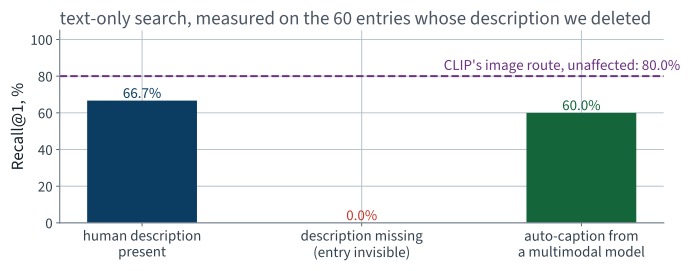
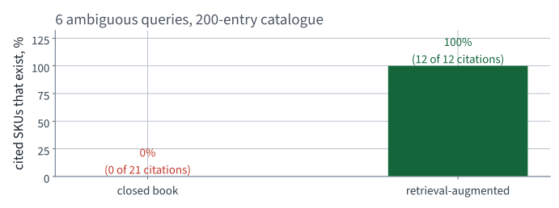
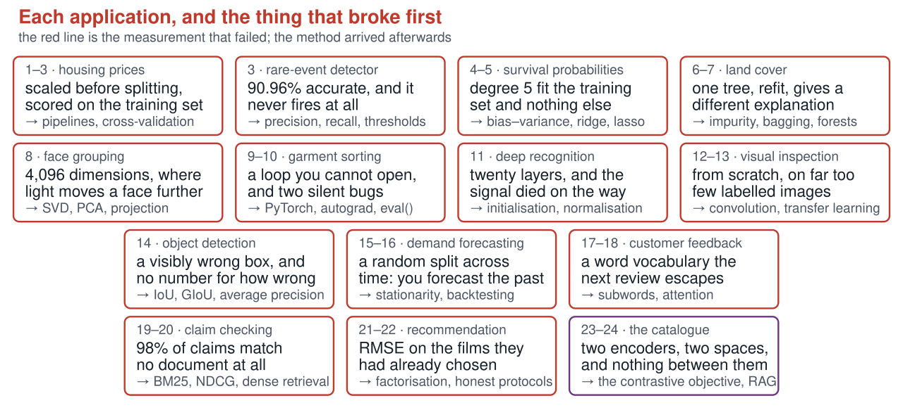

COCO and the Part V corpora
Lecture 24 Géron Ch. 15–16
Applications of Machine Learning
BSc Mathematics of Artificial Intelligence · Third year
Lecture 23 built a catalogue you can search with a sentence. Two encoders trained apart put text and images in spaces with nothing between them, and ranked no better than chance; one dual encoder, trained contrastively on pairs, on the unit sphere and with a temperature, put the right entry first for 75.0% of 200 queries.
Measured on one run of this lecture’s notebook; hardware, library versions and random seeds can make a re-run differ slightly.
60 of 200 catalogue entries have no description. A text index cannot rank a document that does not exist, so those entries score exactly 0% — structurally, not statistically.
| Component | What it is |
|---|---|
| Image encoder | a vision transformer — Chapter 16 |
| Text decoder | a transformer decoder with cross-attention to the image — Chapter 15 |
| Training | image–caption pairs, next-token prediction |
| Size | 224 million parameters |
Architecturally this is the encoder–decoder of Chapter 15 with an image encoder in place of the text one. Nothing new; a different pair of modalities in the same box.
Measured on one run of this lecture’s notebook; hardware, library versions and random seeds can make a re-run differ slightly.

From 0% to 60.00% on the 60 affected entries — against 66.7% if a person had written them.
Measured on one run of this lecture’s notebook; hardware, library versions and random seeds can make a re-run differ slightly.
Both repairs lean on Lecture 23’s joint space, which nothing today touches. For the first time in this course, a first guess at its number was probably too low rather than too high — because the failure was not in the evaluation. It was in the geometry, and the repair was somebody else’s pretraining run.
Measured on one run of this lecture’s notebook; hardware, library versions and random seeds can make a re-run differ slightly.
| Good at | Bad at | |
|---|---|---|
| Retriever | finding the right entries, fast, over millions | saying anything; it only ranks |
| Generator | fluent answers, synthesis across entries | knowing anything reliably; it will produce a plausible answer regardless |
Each covers the other’s weakness, which is why the combination is worth more than either. It is also why the failures are interesting: they belong to neither half.
Evaluating the retriever alone (recall@k) and the generator alone (fluency) can both look excellent while the system does all three. The join needs its own measurement.
Before anything is retrieved, the corpus must be cut into units. That choice is upstream of the retriever and of the generator, and it is usually made without measurement.
It is a hyperparameter. Treat it as one: vary it, hold everything else fixed, and measure recall@k on the same judgements — Lecture 19’s protocol, unchanged.
$k$ trades two failures against each other.
| Small $k$ | Large $k$ |
|---|---|
| the right entry may not be there at all | it is there, buried among distractors |
| the generator cannot recover | the generator may attend to the wrong one |
A ranked list of pictures is a poor answer to any of these. The customer wants a shortlist with reasons — and a ranking has no place to put a reason.
Six such queries, written by hand, and the counts below are the notebook's run over them. There is no dataset of ambiguous queries; inventing them and saying so is the honest option.
Option A
Show the top ten pictures and let the customer decide. That is what we already have, and it is why they asked in words.
Option B
Ask a language model. It has never seen our catalogue, so anything it recommends is invented — and it will invent it fluently.
Retrieval-augmented generation is the composition of the two: retrieve first, then generate strictly from what was retrieved.
“The answer is good” is not measurable in a lecture. So give every entry a stock number and require the assistant to cite them:
This measures grounding, not helpfulness. Say which one you measured; they are not the same thing and only one of them is cheap.
q = unit(clip_text(["something to sit on"])) # (1, 512)
top5 = np.argsort(-(q @ I.T)[0])[:5] # I: catalogue images
shortlist = "\n".join(f"- {cat[j]['sku']}: {cat[j]['captions'][0]}"
for j in top5)
prompt = (f'Here are the catalogue entries our search returned for '
f'"something to sit on":\n{shortlist}\n\n'
f'Recommend the best ones, citing only SKUs from the list above. '
f'If none fit, say so.')
answer = generate(prompt) # a 0.5B instruction model
cited = re.findall(r"CAT-\d{6}", answer)
print(f"{sum(s in valid_skus for s in cited)}/{len(cited)} cited SKUs exist")
The failure is not that it refuses. It is that it does not refuse, and nothing in the output distinguishes an invented SKU from a real one.

0% of closed-book citations exist against 100% when the shortlist is in the prompt — over 6 queries and a 200-entry catalogue.
| Route | Before | After |
|---|---|---|
| Text query → image, joint space | 75.0% | 75.0% (untouched) |
| Text index, on the entries with no description | 0% | 60.00% |
| Ambiguous queries, grounding rate | 0% | 100% |
Two repairs, two measured deltas, one number deliberately unchanged as a control. That last row is what makes the other two believable.
Measured on one run of this lecture’s notebook; hardware, library versions and random seeds can make a re-run differ slightly.
Every method in this course arrived because something measurable could not be done without it.
Partway through, the lectures were cut to what the room actually covered: fewer slides each, and the same four parts in every one.

Read the middle line of each box. That is the syllabus — the chapter order is a consequence of it.
Forty per cent of the written paper, and the part of this course with the longest shelf life.
| Failure | First met | Measured cost |
|---|---|---|
| Fitting before splitting | Lecture 3 | nothing measurable — and unknowable in advance |
| Evaluating on training data | Lecture 3 | an RMSE of zero |
| Accuracy under imbalance | Lecture 3 | a useless model above 90% |
| Choosing on the test set | Lectures 3, 5 | an optimistic report, every time |
Missing zero_grad() | Lecture 10 | 66 points |
| Default initialisation, deep | Lecture 11 | a network that does not train at all |
| Random split on a series | Lecture 15 | optimistic, and undeployable |
| Augmenting the validation set | Lecture 13 | 2.16 points of noise on the criterion |
Not one of them raises an exception. That is the whole reason the course is organised around measurement.
| It runs, and produces a plausible number | Diagnosed in |
|---|---|
| Scaler fitted before the split | L3 |
| Evaluating on training data | L3 |
| Accuracy under class imbalance | L3 |
| Hyperparameters chosen on the test set | L3, L5, and again on a prompt template in L23 |
Missing model.eval() / optimizer.zero_grad() | L10 |
| Metric averaged per batch, not over the set | L10 |
| Random split on an autocorrelated series | L15 |
| Embeddings compared without normalising | L23 |
Every row of that table runs to completion. Not one of them raises.
Named so you know they exist and roughly where they sit. None is examinable, and each is a course.
Drift
Every number in this course was measured on data drawn like the training data. In production that stops being true, gradually and without warning, and the score you reported at launch is the last honest one anybody has.
Monitor the inputs, not just the outputs: the distribution moves before the accuracy does.
Who it is worse for
Lecture 22 asked whom a recommender serves: popularity alone scores respectably, and the metric gives a film everyone has heard of the same credit as a discovery. Asking that costs a line of code, and it is the difference between a system you can defend and one you cannot.
The habit generalises: always ask for whom the average is wrong.
| Topic | Why it matters, in one line |
|---|---|
| Causal inference | every model here answers “what is associated with what”; deciding an intervention needs different assumptions and different data |
| Uncertainty quantification | Lecture 4 checked whether one classifier’s probabilities were calibrated. Predictive uncertainty in general is its own subject |
| Fairness and harm | we asked once, in Lecture 22, whom a system serves. Who it fails, and what that costs them, is not a metric you can pick off a list |
| Privacy | differential privacy, federated learning, and what a model memorises about its training data |
| Monitoring and drift | a model is fitted once and lives for years. Detecting that the world moved is a permanent job |
| Experimental design | an offline metric improving is not a business improving. That is an A/B test, and it is a statistics problem |
Six steps. Nothing in them is specific to a library, and none of them will be out of date in ten years.
Much of the code you write from here on will be drafted with an assistant’s help. That changes who types it. It does not change what this course was about.
The code was never the scarce part. Knowing whether to believe the output is, and that is what these twenty-four lectures were for.
Written — two hours, closed book
Oral — optional, seven to ten minutes
The written is marked out of 30, pass at 18, capped at 27 on its own; the oral moves it up or down, and 28, 29 and 30 exist only through it. Everything in Chapters 1–16 and in the Part V notes is examinable; nothing marked engineering or for context is. The 120 exercises that end these decks are published with their solutions.
The libraries in these notebooks will be superseded. The derivations will not, and neither will the habit of asking what a number was measured on.
do_sample=True and run the grounding measurement three
times. The percentage moves every run: a sampled generation makes it a
random variable whose spread nothing here has characterised.
Measured on one run of this lecture’s notebook; hardware, library versions and random seeds can make a re-run differ slightly.
Every failure in this course — the leak, the training score, accuracy under imbalance, the random split on a series, the augmented validation set, the ungrounded generated answer — is a case where that question had an answer nobody had asked for.
Asking it costs seconds. Not asking it has cost, in these twenty-four lectures alone, an RMSE of zero, a 90% classifier that never fires, a network that does not train, and a forecast of the past.
Not presented — for afterwards
five, in the style of the written paper
Solutions overleaf — there is no Lecture 25.
Solutions overleaf — there is no Lecture 25.
The five set at the end of Lecture 23
not part of this lecture
1. Two encoders are trained separately, one on images and one on text. Explain why their cosine similarity…
Any rotation of the image space leaves every image–image cosine and the image loss unchanged, while changing every image–text cosine.
2. A rank is computed by counting only the candidates that score strictly higher than the right answer. State…
100%: every candidate ties with the right answer and a strict inequality places every tie behind it. Count with $\ge$, so ties count against the model.
3. The InfoNCE logits are cosines divided by a temperature $\tau$. State what $\tau$ cannot change for a fixed…
It cannot change which column of a row is largest, so not the ranking. It changes where the gradient goes: $(p_{ij} - \mathbf{1}[j = i])/\tau$.
4. Recall@10 is reported over 200 candidates. State the exact random baseline, and why it is computed rather…
$10/200 = 5\%$.
5. An entry with no written description is never returned by a text index built over the descriptions. State…
Structural — an entry with no text is not in a text index at all, so the repair is to match the query against the picture instead.
Answered here, because there is no Lecture 25
not part of this lecture
1. Sixty catalogue entries have no description. State why their text-route R@1 of 0% is structural rather than…
A text index cannot rank a document that does not exist, so those entries score zero whatever the queries. Captions bring R@1 on them to 60.00%, against 66.7% with a person’s description: part of the loss, not all of it.
2. Name the three failures that belong to the join of a retriever and a generator, and state why evaluating each…
Retrieved but ignored; not retrieved, answered anyway; retrieved and misread. Recall@k on the retriever and fluency on the generator can both look excellent while the system does all three.
Measured on one run of this lecture’s notebook; hardware, library versions and random seeds can make a re-run differ slightly.
3. A retrieval-augmented system is measured by whether cited stock numbers exist. State what that measures, and…
It measures grounding, not helpfulness.
4. In a retrieval-augmented pipeline the retriever’s recall bounds the whole system. Explain why, and what…
If the right entry is not retrieved, no generation recovers it.
5. Name three rows of the course’s catalogue of silent failures, and state the property they share and…
For example a scaler fitted before the split, a missing zero_grad(), a random split on an autocorrelated series. None of them raises: each runs to completion and produces a plausible number.
Applicazioni Informatiche del Machine Learning
Eighteen derivations · twenty-four notebooks · thirteen datasets
Every number on every slide reproduced by a script in the repository
Questions, and then the examination